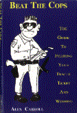

- How he beat 6 out of 7 radar tickets
- How it's possible to speed legally
- About an organization that pays speeding ticket fines
- How to beat tickets without going to court
- How to schedule your trial during the cop's vacation
- How to beat camera tickets
- Two things to never do when pulled over
- How to beat air-patrol tickets
- How to beat out-of-state tickets
- Cop's favorite hiding places
- How to beat visually estimated speeding tickets
- If cops still have quotas
- What to do if you don't have time to fight your ticket
... And much more
- 100,000 tickets issued daily nationwide
Approximately 30 million tickets anually. The vast majority of them are undeserverd. Whether victims of speed traps, improper speed limits, faulty radar equipment, quotas or bad police judgment, the effect is the same. They don't deserve the inflated fines and certainly not the inflated fines and certainly not outrageous insurance surcharges that follow. Burglars usually get off easier.
- Average ticket fine: $125
Municipalities across the country rake in more than $3 Billion each year in ticket fines. Many speed trap towns generate more than 75% of their operating budgets just from speeding tickets. Sadly, law enforcement officers are being used as nothing more than armed tax collector's in many areas.
- Average insurance surcharge: $1,000 (over 3 year period)
Insurance companies are the real winners in the ticket business. The figures tell the story: 30 million tickets times $333 (average annual surcharge increase per ticket) equals a yearly windfall of nearly $10 Billion. No wonder the insurance companies were the only ones fighting the repeal of the 55 MPH speed limit in 1996.
- 75% of prepared ticket challengers win
While 90% of ticket recipients are obdiently mailing in their fines, the majority of the 10% who actually
challenge their tickets are winning, and saving themselves a bundle in the process. Why do the ticketed usually roll over - even though they're often not guilty? Many don't realize how much it'll really cost them, and the rest are intimidated by cops and courts and don't believe they have a chance.
After former courier drive Alex Carroll beat 8 of 10 tickets, he realized that fellow motorists just needed a little plain English, not legalese.
Since writing "Beat The Cops, The Guide To Fighting Your Traffic Ticket & Winning," Carroll has become a motorist's advocate and has appeared as a guest on hundreds of radio and TV shows across North America.
He went on to head the California Chapter of the National Motorist's Association and was a leading spokesperson in the organization's successful drive to repeal the national 55 MPH Speed Limit.
His book has sold well over 100,000 copies nationwide.